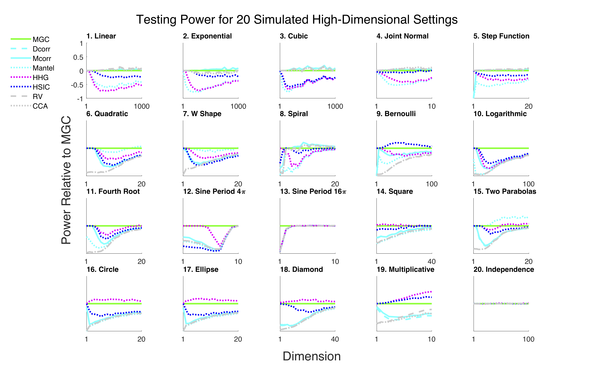
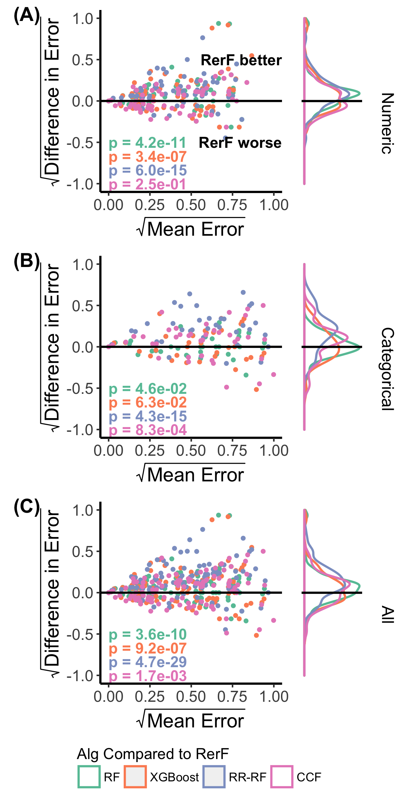
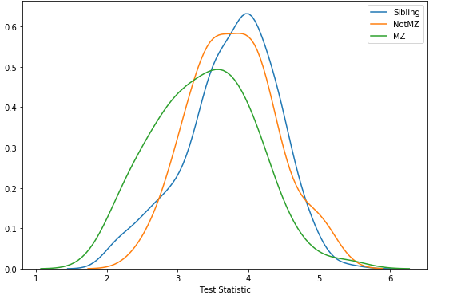

name:opening # NeuroData (Science) Joshua T. Vogelstein <img src="images/neurodata_blue.png" style="height:150px;float:right;"/> <br><br><br><br><br><br><br><br><br><br> <img src="images/funding/jhu_bme_blue.png" STYLE="HEIGHT:95px;"/> <img src="images/funding/KNDI.png" STYLE="HEIGHT:95px;"/> .foot[[jovo@jhu.edu](mailto:jovo@jhu.edu) | <http://neurodata.io/talks/> | [@neuro_data](https://twitter.com/neuro_data)] --- ### What is Neural Data Science? a field that develops and applies algorithms, statistical models, and (database) systems to - manage - visualize - wrangle - summarize - generalize - control neural data. --- ### Why is it hard? 1. volume: terabytes 2. variety: multi-modal (images, atlases, annotations, networks) 4. veracity: noisy Subject matter expertise is required to mitigate these challenges, including - computer science - statistical machine learning - brain science --- ### NeuroData Approach 1. build computational tools for manage & visualize 2. build statistical tools wrangle, summarize, and control 3. apply them --- ### Manage Data management systems enable users to create, read, edit, and delete "records" <!-- NeuroData management has the following requirements: --> - stores multiple modalities (e.g., images & annotations) - scales to terabytes - atlases - annotations - networks --- #### Example: NeuroData Cloud <img src="images/bossDB.png" STYLE="width:100%;"/> - 200+ teravoxels - 100+ public & private datasets - 30+ collaborators - All 3D+ data & annotations (no ephys, etc.) - Largest public open neuroscience data repository in the world! .footnote[https://neurodata.io/ndcloud/] --- ### Visualize Data visualization systems generate maps, charts, and tables to highlight/illustrate insightful perspectives on the data. - pan - zoom - overlay multiple channels - overlay annotations - manually annotate --- #### Example: NeuroGlancer <img src="images/AT_rorb.png" style="position:absolute; left:0px; top:0px; width: 100%;"/> .footnote[https://github.com/neurodata/neuroglancer] --- ### Wrangle Data wrangling consists of any operation one applies to the data that maintains its representation, such as outlier detection, missing value imputation, and deconvolution - bias field correction - motion correction - nonlinear multi-modal registration --- #### Example: COBALT <img src="images/ndreg.png" style="width: 100%;"/> - Large deformation diffeomorphic metric mapping (LDDMM) - Fully automatic (no landmarks) - Modalities: iDisco, CLARITY, MRI, histology, etc., - Species: human, rat, mouse, zebrafish... .footnote[https://neurodata.io/ndreg/] --- ### Summarize Data summaries include point estimates, confidence intervals, clusters, principle components analysis, etc. - network estimation from MRI - spike detection from calcium imaging - synapse detection - cell body detection from CLARITY images --- #### Example: COBALT <img src="images/clarity_cells.png" style="position:absolute; left:0px; top:0px; height: 100%;"/> .footnote[https://neurodata.io/ndreg] --- ### Generalize Infer properties of a "population" (typically very high-dimensional) - hypothesis testing - modeling - simulation --- ### Example: 20 nonlinear simulations <img src="images/FigSimVisual.svg" style="width: 100%;"/> --- <!-- #### Example: MGC -->  .footnote[https://neurodata.io/mgc] --- ### Predict Prediction the something about a future sample given a data corpus - classify: X is of type A - regress: given X, Y is expected to be 6 - forecast: X is expected to be 6 tomorrow --- ### Example: RerF  - generalization of random forests - significantly improve over best machine learning algs on >100 benchmark problems .footnote[https://neurodata.io/rerf/] --- class: middle ## .center[Applications in Connectomics] --- ### Human Connectome Heritability  .footnote[https://neurodata.io/graspy] --- ### Modeling Drosophila Mushroom Body <img src="images/drosophila_model.png" style="width: 100%;"/> .footnote[https://neurodata.io/graspy] --- class: inverse ### Batch Effects in Connectomics  - 20 datasets, >3000 scans .footnote[https://neurodata.io/ndmg] --- class: inverse ### Batch Effects in Connectomics  - 20 datasets, >3000 scans - sex effect is smaller than site effect .footnote[https://neurodata.io/ndmg] --- ### Papers 1. Vogelstein et al. *Nature Methods* (2018) [[manage & viz]](https://rdcu.be/banSS) 2. Kutten et al. *MICCAI* (2018) [[wrangle]](https://link.springer.com/chapter/10.1007%2F978-3-319-66182-7_32) 3. Vogelstein et al. *eLife* (2019) [[generalize]](https://elifesciences.org/articles/41690) 4. Tomita et al. *arXiv* (2015) [[predict]](https://arxiv.org/abs/1506.03410) 5. Athreya et al. *JMLR* (2018) [[graphs]](http://jmlr.org/papers/v18/17-448.html) 6. Kiar et al. *bioRxiv* (2018) [[MRI]](https://www.biorxiv.org/content/10.1101/188706v6) ### Tools - [ndcloud](https://neurodata.io/ndcloud) - [COBALT](https://neurodata.io/ndreg) - [MGC](https://neurodata.io/mgc) - [RerF](https://neurodata.io/rerf) - [GrasPy](https://neurodata.io/graspy) - [ndmg](https://neurodata.io/ndmg) --- ### Acknowledgements <div class="small-container"> <img src="faces/cep.png"/> <div class="centered">Carey Priebe</div> </div> <div class="small-container"> <img src="faces/randal.jpg"/> <div class="centered">Randal Burns</div> </div> <div class="small-container"> <img src="faces/mim.jpg"/> <div class="centered">Michael Miller</div> </div> <div class="small-container"> <img src="faces/dtward.jpg"/> <div class="centered">Daniel Tward</div> </div> <div class="small-container"> <img src="faces/ebridge.jpg"/> <div class="centered">Eric Bridgeford</div> </div> <div class="small-container"> <img src="faces/vikram.jpg"/> <div class="centered">Vikram Chandrashekhar</div> </div> <div class="small-container"> <img src="faces/drishti.jpg"/> <div class="centered">Drishti Mannan</div> </div> <div class="small-container"> <img src="faces/jesse.jpg"/> <div class="centered">Jesse Patsolic</div> </div> <div class="small-container"> <img src="faces/falk_ben.jpg"/> <div class="centered">Benjamin Falk</div> </div> <div class="small-container"> <img src="faces/kwame.jpg"/> <div class="centered">Kwame Kutten</div> </div> <div class="small-container"> <img src="faces/perlman.jpg"/> <div class="centered">Eric Perlman</div> </div> <div class="small-container"> <img src="faces/loftus.jpg"/> <div class="centered">Alex Loftus</div> </div> <div class="small-container"> <img src="faces/bcaffo.jpg"/> <div class="centered">Brian Caffo</div> </div> <div class="small-container"> <img src="faces/minh.jpg"/> <div class="centered">Minh Tang</div> </div> <div class="small-container"> <img src="faces/avanti.jpg"/> <div class="centered">Avanti Athreya</div> </div> <div class="small-container"> <img src="faces/vince.jpg"/> <div class="centered">Vince Lyzinski</div> </div> <div class="small-container"> <img src="faces/dpmcsuss.jpg"/> <div class="centered">Daniel Sussman</div> </div> <div class="small-container"> <img src="faces/youngser.jpg"/> <div class="centered">Youngser Park</div> </div> <div class="small-container"> <img src="faces/cshen.jpg"/> <div class="centered">Cencheng Shen</div> </div> <div class="small-container"> <img src="faces/shangsi.jpg"/> <div class="centered">Shangsi Wang</div> </div> <div class="small-container"> <img src="faces/tyler.jpg"/> <div class="centered">Tyler Tomita</div> </div> <div class="small-container"> <img src="faces/james.jpg"/> <div class="centered">James Brown</div> </div> <div class="small-container"> <img src="faces/disa.jpg"/> <div class="centered">Disa Mhembere</div> </div> <div class="small-container"> <img src="faces/pedigo.jpg"/> <div class="centered">Ben Pedigo</div> </div> <div class="small-container"> <img src="faces/jaewon.jpg"/> <div class="centered">Jaewon Chung</div> </div> <div class="small-container"> <img src="faces/gkiar.jpg"/> <div class="centered">Greg Kiar</div> </div> <div class="small-container"> <img src="faces/jeremias.png"/> <div class="centered">Jeremias Sulam</div> </div><span style="font-size:200%; color:red;">♥, 🦁, 👪, 🌎, 🌌</span> <img src="images/funding/nsf_fpo.png" STYLE="HEIGHT:95px;"/> <img src="images/funding/nih_fpo.png" STYLE="HEIGHT:95px;"/> <img src="images/funding/darpa_fpo.png" STYLE=" HEIGHT:95px;"/> <img src="images/funding/iarpa_fpo.jpg" STYLE="HEIGHT:95px;"/> <img src="images/funding/KAVLI.jpg" STYLE="HEIGHT:95px;"/> <img src="images/funding/schmidt.jpg" STYLE="HEIGHT:95px;"/> --- class:center <img src="images/lion_cartoon2.jpg" style="position:absolute; top:0px; left:0px; height:100%;"/>